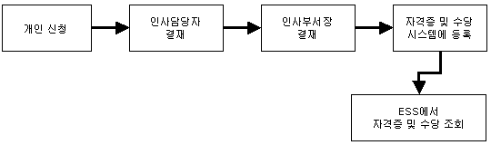
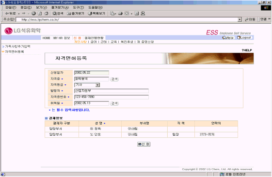

| Ⅰ. 개요 및 신청절차 |
| 1. 개요 |
| 개인이 자격증을 취득하면 ESS에 등록하고, 인사담당자, 인사부서장의 결재를 득한 후 시스템에 등록된다. 자격수당을 지급받는 자격증의 경우에만(법정선임) 급여에 반영되며, 자격증 및 자격수당 정보는 개인이 ESS에서 조회한다. |
| |
| 2. 절차 |
|  |
|
| |
| |
| Ⅱ. 화면사용법 및 유의사항 |
| <그림 1. 자격면허등록 화면> |
|  |
| |
| 1) 취득한 자격증을 등록하기 위해, 자격증, 자격등급, 발행처, 자격증 번호, 취득일을 입력한다. |
| 2) 자격증을 입력할 때는 "검색" 버튼을 클릭하여 keyword를 입력하고 엔터키를 친 후 관련 List가 |
| 나타나면 해당 자격증을 선택한다. |
| 3) 자격증 사본을 아래 결재정보의 담당부서 담당자에게 발송한다. 담당부서장까지 결재를 득하면 |
| "My HR정보"의 자격면허 조회에서 자격증 등록사항 및 자격수당(수당이 지급되는 자격증에 한함)을 |
| 확인할 수 있다. |
|
| |
| |
| Ⅲ. 제출서류 |
| 1) 자격증 사본 (제출처 : 인력개발팀) |
| ※ 자격수당의 지급, 즉 법전선임 여부는 환경안전팀 또는 주관부서에서 선임여부를 판정하여 |
| 인력개발팀으로 요청시 반영을 한다. |
| |
|